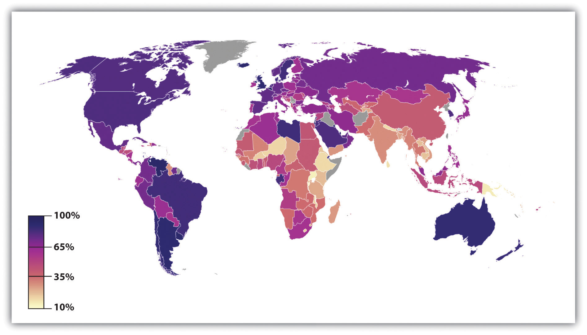

An important aspect of social change and population growth over the centuries has been urbanizationThe rise and growth of cities., or the rise and growth of cities. Urbanization has had important consequences for many aspects of social, political, and economic life (Kleniewski & Thomas, 2011).Kleniewski, N., & Thomas, A. R. (2011). Cities, change, and conflict (4th ed.). Belmont, CA: Wadsworth.
The earliest cities developed in ancient times after the rise of horticultural and pastoral societies made it possible for people to stay in one place instead of having to move around to find food. Because ancient cities had no sanitation facilities, people typically left their garbage and human waste in the city streets or just outside the city wall (which most cities had for protection from possible enemies); this poor sanitation led to rampant disease and high death rates. Some cities eventually developed better sanitation procedures, including, in Rome, a sewer system (Smith, 2003).Smith, M. L. (Ed.). (2003). The social construction of ancient cities. Washington, DC: Smithsonian Institution Press.
Cities became more numerous and much larger during industrialization, as people moved to be near factories and other sites of industrial production. First in Europe and then in the United States, people crowded together as never before into living conditions that were often decrepit. Lack of sanitation continued to cause rampant disease, and death rates from cholera, typhoid, and other illnesses were high. In addition, crime rates soared, and mob violence became quite common (Feldberg, 1998).Feldberg, M. (1998). Urbanization as a cause of violence: Philadelphia as a test case. In A. F. Davis & M. H. Haller (Eds.), The peoples of Philadelphia: A history of ethnic groups and lower-class life, 1790–1940 (pp. 53–69). Philadelphia: University of Pennsylvania Press.
During the early 20th century, social scientists at the University of Chicago began to study urban life in general and life in Chicago in particular. Although some of these scholars were very dismayed by the negative aspects of city life, other scholars emphasized several positive aspects of city life.
Are cities good or bad? We asked a similar question—is modernization good or bad?—earlier in this chapter, and the answer here is similar as well: cities are both good and bad. They are sites of innovation, high culture, population diversity, and excitement, but they are also sites of high crime, impersonality, and other problems.
In the early 20th century, a group of social scientists at the University of Chicago established a research agenda on cities that is still influential today (Bulmer, 1984).Bulmer, M. (1984). The Chicago school of sociology: Institutionalization, diversity, and the rise of sociological research. Chicago, IL: University of Chicago Press. Most notably, they began to study the effects of urbanization on various aspects of city residents’ lives in what came to be called the human ecology schoolThe study by early University of Chicago sociologists of the effects of urbanization on various aspects of city residents’ lives. (Park, Burgess, & McKenzie, 1925).Park, R. E., Burgess, E. W., & McKenzie, R. (1925). The city. Chicago, IL: University of Chicago Press. One of their innovations was to divide Chicago into geographical regions, or zones, and to analyze crime rates and other behavioral differences among the zones. They found that crime rates were higher in the inner zone, or central part of the city, where housing was crowded and poverty was common, and were lower in the outer zones, or the outer edges of the city, where houses were spread farther apart and poverty was much lower. Because they found these crime rate differences changed over time even as the ethnic backgrounds of people in these zones, they assumed that the social and physical features of the neighborhoods were affecting their crime rates (Shaw & McKay, 1942).Shaw, C. R., & McKay, H. D. (1942). Juvenile delinquency and urban areas. Chicago, IL: University of Chicago Press. Their work is still useful today, as it helps us realize that the social environment, broadly defined, can affect our attitudes and behavior. This theme, of course, lies at the heart of the sociological perspective.
One of the most notable Chicago sociologists was Louis Wirth (1897–1952), who, in a well-known essay entitled “Urbanism as a Way of Life” (Wirth, 1938),Wirth, L. (1938). Urbanism as a way of life. American Journal of Sociology, 44, 3–24. discussed several differences between urban and rural life. In one such difference, he said that urban residents are more tolerant than rural residents of nontraditional attitudes, behaviors, and lifestyles, in part because they are much more exposed than rural residents to these nontraditional ways. Supporting Wirth’s hypothesis, contemporary research finds that urban residents indeed hold more tolerant views on several kinds of issues (Moore & Ovadia, 2006).Moore, L. M., & Ovadia, S. (2006). Accounting for spatial variation in tolerance: The effects of education and religion. Social Forces, 84(4), 2205–2222.
Life in U.S. cities today reflects the dual view just outlined. On the one hand, many U.S. cities are vibrant places, filled with museums and other cultural attractions, nightclubs, theaters, and restaurants and populated by people from many walks of life and from varied racial and ethnic and national backgrounds. Many college graduates flock to cities, not only for their employment opportunities but also for their many activities and the sheer excitement of living in a metropolis. On the other hand, many U.S. cities are also filled with abject poverty, filthy and dilapidated housing, high crime rates, traffic gridlock, and dirty air. Many Americans would live nowhere but a city, and many would live anywhere but a city. Cities arouse strong opinions pro and con, and for good reason, because there are many things both to like and to dislike about cities.
The quality of city life depends on many factors, but one of the most important factors is a person’s social background: social class, race/ethnicity, gender, age, and sexual orientation. As earlier chapters documented, these dimensions of our social backgrounds often yield many kinds of social inequalities, and the quality of life that city residents enjoy depends heavily on these dimensions. For example, residents who are white and wealthy have the money and access to enjoy the best that cities have to offer, while those who are poor and of color typically experience the worst aspects of city life. Because of fear of rape and sexual assault, women often feel more constrained than men from traveling freely throughout a city and being out late at night; older people also often feel more constrained because of physical limitations and fear of muggings; and gays and lesbians are still subject to physical assaults stemming from homophobia. The type of resident we are, then, in terms of our sociodemographic profile affects what we experience in the city and whether that experience is positive or negative.
This brief profile of city residents obscures other kinds of differences among residents regarding their lifestyles and experiences. A classic typology of urban dwellers by sociologist Herbert Gans (1962)Gans, H. J. (1962). The urban villagers: Group and class in the life of Italian-Americans. New York, NY: Free Press. is still useful today in helping to understand the variety of lives found in cities. Gans identified five types of city residents.
The first type is cosmopolites. These are people who live in a city because of its cultural attractions, restaurants, and other features of the best that a city has to offer. Cosmopolites include students, writers, musicians, and intellectuals. Unmarried and childless individuals and couples are the second type; they live in a city to be near their jobs and to enjoy the various kinds of entertainment found in most cities. If and when they marry or have children, respectively, many migrate to the suburbs to raise their families. The third type is ethnic villagers, who are recent immigrants and members of various ethnic groups who live among each other in certain neighborhoods. These neighborhoods tend to have strong social bonds and more generally a strong sense of community. Gans wrote that all of these three types generally find the city inviting rather than alienating and have positive experiences far more often than negative ones.
In contrast, two final types of residents find the city alienating and experience a low quality of life. The first of these two types, and the fourth overall, is the deprived. These are people with low levels of formal education who live in poverty or near-poverty and are unemployed, are underemployed, or work at low wages. They live in neighborhoods filled with trash, broken windows, and other signs of disorder. They commit high rates of crime and also have high rates of victimization by crime. The final type is the trapped. These are residents who, as their name implies, might wish to leave their neighborhoods but are unable to do so for several reasons: they may be alcoholics or drug addicts, they may be elderly and disabled, or they may be jobless and cannot afford to move to a better area.
By definition, cities consist of very large numbers of people living in a relatively small amount of space. Some of these people have a good deal of money, but many people, and in some cities most people, have very little money. Cities must provide many kinds of services for all their residents, and certain additional services for their poorer residents. These basic facts of city life make for common sets of problems affecting cities throughout the nation, albeit to varying degrees, with some cities less able than others to address these problems.
One evident problem is fiscal: cities typically have serious difficulties in paying for basic services such as policing, public education, trash removal, street maintenance, and, in cold climates, snow removal, and in providing certain services for their residents who are poor or disabled or who have other conditions. The fiscal difficulties that cities routinely face became even more serious with the onset of the nation’s deep recession in 2009, as the term fiscal crisis became a more accurate description of the harsh financial realities that cities were now facing (McNichol, 2009).McNichol, D. A. (2009, May 1). Revenue loss putting cities in fiscal vise. The New York Times, p. NJ1.
Another problem is crowding. Cities are crowded in at least two ways. The first involves residential crowding: large numbers of people living in a small amount of space. City streets are filled with apartment buildings, condominiums, row houses, and other types of housing, and many people live on any one city block. The second type of crowding is household crowding: dwelling units in cities are typically small because of lack of space, and much smaller than houses in suburbs or rural areas. This forces many people to live in close quarters within a particular dwelling unit. Either type of crowding is associated with higher levels of stress, depression, and aggression (Regoeczi, 2008).Regoeczi, W. C. (2008). Crowding in context: An examination of the differential responses of men and women to high-density living environments. Journal of Health and Social Behavior, 49, 254–268.
A third problem involves housing. Here there are several related issues. Much urban housing is substandard and characterized by such problems as broken windows, malfunctioning heating systems, peeling paint, and insect infestation. At the same time, adequate housing is not affordable for many city residents, as housing prices in cities can be very high, and the residents’ incomes are typically very low. Cities thus have a great need for adequate, affordable housing.
Another housing issue concerns racial segregation. Although federal law prohibits segregated housing, cities across the country are nonetheless highly segregated by race, with many neighborhoods all or mostly African American. Sociologists Douglas S. Massey and Nancy A. Denton (1998)Massey, D. S., & Denton, N. A. (1998). American apartheid: Segregation and the making of the underclass. Cambridge, MA: Harvard University Press. termed this situation “American apartheid.” They said that these segregated neighborhoods result from a combination of several factors, including (a) “white flight” into suburbs, (b) informal—and often illegal—racially discriminatory actions that make it difficult for African Americans to move into white neighborhoods (such as real estate agents falsely telling black couples that no houses are available in a particular neighborhood), and (c) a general lack of income and other resources that makes it very difficult for African Americans to move from segregated neighborhoods.
Massey and Denton argued that residential segregation worsens the general circumstances in which many urban African Americans live. Several reasons account for this effect. As whites flee to the suburbs, the people left behind are much poorer. The tax base of cities suffers accordingly, and along with it the quality of city schools, human services, and other social functions. All these problems help keep the crime rate high and perhaps even raise it further. Because segregated neighborhoods are poor and crime-ridden, businesses do not want to invest in them, and employment opportunities are meager. This fact worsens conditions in segregated neighborhoods even further. Consequently, concluded Massey and Denton, racial segregation helps perpetuate the urban “underclass” of people who live jobless in deep poverty and decaying neighborhoods.
Other research supports this conclusion. As a recent review summarized the evidence,
Whether voluntary or involuntary, living in racially segregated neighborhoods has serious implications for the present and future mobility opportunities of those who are excluded from desirable areas. Where we live affects our proximity to good job opportunities, educational quality, and safety from crime (both as victim and as perpetrator), as well as the quality of our social networks. (Charles, 2003, pp. 167–168)Charles, C. Z. (2003). The dynamics of racial residential segregation. Annual Review of Sociology, 29, 167–207.
To improve the socioeconomic status and living circumstances of African Americans, then, it is critical that residential segregation be reduced.
A fourth problem of city life is traffic. Gridlock occurs in urban areas, not rural ones, because of the sheer volume of traffic and the sheer number of intersections controlled by traffic lights or stop signs. Some cities have better public transportation than others, but traffic and commuting are problems that urban residents experience every day (see the “Learning From Other Societies” box).
Trains, Not Planes (or Cars): The Promise of High-Speed Rail
One of the costs of urbanization and modern life is traffic. Our streets and highways are clogged with motor vehicles, and two major consequences of so much traffic are air pollution and tens of thousands of deaths and injuries from vehicular accidents. One way that many other nations, including China, Germany, Japan, and Spain, have tried to lessen highway traffic in recent decades is through the construction of high-speed rail lines. According to one news report, the U.S. rail system “remains a caboose” compared to the high-speed system found in much of the rest of the world (Knowlton, 2009, p. A16).Knowlton, B. (2009, April 16). Obama seeks high-speed rail system across U.S. The New York Times, p. A16. Japan has one line that averages 180 mph, while Europe’s high-speed trains average 130 mph, with some exceeding 200 mph. These speeds are far faster than the 75 mph typical of Amtrak’s speediest Acela line in the northeastern United States, which must usually go much more slowly than its top speed of 150 mph because of inferior tracking and interference by other trains. Although the first so-called bullet train appeared in Japan about 40 years ago, the United States does not yet have even one such train.
The introduction of high-speed rail in other nations was meant to reduce highway traffic and, in turn, air pollution and vehicular injuries and deaths. Another goal was to reduce air traffic between cities, as high-speed trains emit only one-fourth the carbon dioxide per passengers as planes do while transporting 8 times as many passengers in a given distance (Burnett, 2009).Burnett, V. (2009, May 29). Europe’s travels with high-speed rail hold lessons for U.S. planners: The Spanish experience has been transformative but far from inexpensive. International Herald Tribune, p. 16. A final goal was to aid the national economies of the nations that introduced high-speed rail. The evidence indicates that these goals have been accomplished.
For example, Spain built its first high-speed line, between Madrid and Seville, in 1992 and now has rail reaching about 1,200 miles between its north and south coasts. The rail network has increased travel for work and leisure and thus helped Spain’s economy. The high-speed trains are also being used instead of planes by the vast majority of people who travel between Madrid and either Barcelona or Seville.
China, the world’s most populous nation but far from the richest, has recently opened, or plans to open during the next few years, several dozen high-speed rail lines. Its fastest train averages more than 200 mph and travels 664 miles between two cities, Guangzhou and Wuhan, in just over 3 hours. The Acela takes longer to travel between Boston and New York, a distance of only 215 miles. A news report summarized the economic benefits for China:
Indeed, the web of superfast trains promises to make China even more economically competitive, connecting this vast country—roughly the same size as the United States—as never before, much as the building of the Interstate highway system increased productivity and reduced costs in America a half-century ago. (Bradsher, 2010, p. B1)Bradsher, K. (2010, February 12). China sees growth engine in a web of fast trains. The New York Times, p. B1.
In April 2009 President Barack Obama announced that $8 billion in federal stimulus funding would be made available for the construction of high-speed rail lines in certain parts of the United States to connect cities between 100 and 600 miles apart. The president said,
Imagine whisking through towns at speeds over 100 miles an hour, walking only a few steps to public transportation, and ending up just blocks from your destination. It is happening right now; it’s been happening for decades. The problem is, it’s been happening elsewhere, not here. (Knowlton, 2009)Knowlton, B. (2009, April 16). Obama seeks high-speed rail system across U.S. The New York Times, p. A16.
As large as it is, the $8 billion figure announced by Obama pales in comparison with an estimated $140 billion that Spain plans to further spend on high-speed rail during the next decade, and a system of high-speed rail in the United States will cost more than even this expenditure. Despite the huge expense of high-speed rail, the positive experience of other nations that are using it suggests that the United States will benefit in many ways from following their example. If it does not do so, said one scholar, “the American preference for clogged-up highways and airports will make the country look so old, so 20th-century-ish. So behind the times” (Kennedy, 2010).Kennedy, P. (2010, January 4). A trainspotter’s guide to the future of the world. The New York Times. Retrieved from http://www.nytimes.com/2010/01/05/opinion/05iht-edkennedy.html?scp=1&sq=A%20trainspotter’s%20guide%20to %20the%20future%20of%20the%20world&st=cse
A related problem is pollution. Traffic creates pollution from motor vehicles’ exhaust systems, and some cities have factories and other enterprises that also pollute. As a result, air quality in cities is substandard, and the poor quality of air in cities has been linked to respiratory and heart disease and higher mortality rates (Stylianou & Nicolich, 2009).Stylianou, M., & Nicolich, M. J. (2009). Cumulative effects and threshold levels in air pollution mortality: Data analysis of nine large US cities using the NMMAPS dataset. Environmental Pollution, 157, 2216–2223.
Yet another issue for cities is the state of their public education. Many city schools are housed in old buildings that, like much city housing, are falling apart. City schools are notoriously underfunded and lack current textbooks, adequate science equipment, and other instructional materials (see Chapter 16 "Education").
Although cities have many additional problems, crime is an appropriate issue with which to end this section because of its importance. Simply put, cities have much higher rates of violent and property crime than do small towns or rural areas. For example, the violent crime rate (number of crimes per 100,000 residents) in 2009 was 459 for the nation’s largest cities, compared to only 202 for rural counties. The property crime rate in the largest cities was 3,160 crimes per 100,000, compared to only 1,570 in rural counties (Federal Bureau of Investigation, 2010).Federal Bureau of Investigation. (2010). Crime in the United States, 2009. Washington, DC: Author. Crime rates in large cities are thus two to three times higher than those in rural counties.
Urbanization varies around the world. In general, wealthy nations are more urban than poor nations (see Figure 19.9 "Percentage of Population Living in Urban Areas, 2005"), thanks in large part to the latter’s rural economies. This variation, however, obscures the fact that the world is becoming increasingly urban overall. In 1950, less than one-third of the world’s population lived in cities or towns; in 2008, more than half the population lived in cities or towns, representing the first time in history that a majority of people were not living in rural areas (United Nations Population Fund, 2007).United Nations Population Fund. (2007). Linking population, poverty, and development. Urbanization: A majority in cities. Retrieved from http://www.unfpa.org/pds/urbanization.htm By 2030, almost two-thirds of the world’s population is projected to live in urban areas.
The number of urban residents will increase rapidly in the years ahead, especially in Africa and Asia as people in these continents’ nations move to urban areas and as their populations continue to grow through natural fertility. Fertility is a special problem in this regard for two reasons. First, and as we saw earlier, women in poor nations have higher fertility rates for several reasons. Second, poorer nations have very high proportions of young people, and these high rates mean that many births occur because of the large number of women in their childbearing years.
Figure 19.9 Percentage of Population Living in Urban Areas, 2005
Source: Adapted from http://en.wikipedia.org/wiki/File:Urban_population_in_2005_world_map.PNG.
This trend poses both opportunities and challenges for poorer nations. The opportunities are many. Jobs are more plentiful in cities than in rural areas and incomes are higher, and services such as health care and schooling are easier to deliver because people are living more closely together. In another advantage, women in poorer nations generally fare better in cities than in rural areas in terms of education and employment possibilities (United Nations Population Fund, 2007).United Nations Population Fund. (2007). Linking population, poverty, and development. Urbanization: A majority in cities. Retrieved from http://www.unfpa.org/pds/urbanization.htm
But there are also many challenges. In the major cities of poor nations, homeless children live in the streets as beggars, and many people lack necessities and conveniences that urban dwellers in industrial nations take for granted. As the United Nations Population Fund (2007)United Nations Population Fund. (2007). Linking population, poverty, and development. Urbanization: A majority in cities. Retrieved from http://www.unfpa.org/pds/urbanization.htm warns, “One billion people live in urban slums, which are typically overcrowded, polluted and dangerous, and lack basic services such as clean water and sanitation.” The rapid urbanization of poor nations will compound the many problems these nations already have, just as the rapid urbanization in the industrial world more than a century ago led to the disease and other problems discussed earlier. As cities grow rapidly in poor nations, moreover, these nations’ poverty makes them ill equipped to meet the challenges of urbanization. Helping these nations meet the needs of their cities remains a major challenge for the world community in the years ahead. In this regard, the United Nations Population Fund (United Nations Population Fund, 2007)United Nations Population Fund. (2007). Linking population, poverty, and development. Urbanization: A majority in cities. Retrieved from http://www.unfpa.org/pds/urbanization.htm urges particular attention to housing:
Addressing the housing needs of the poor will be critical. A roof and an address in a habitable area are the first step to a better life. Improving access to basic social and health services, including reproductive health care, for poor people in urban slums is also critical to breaking the cycle of poverty.